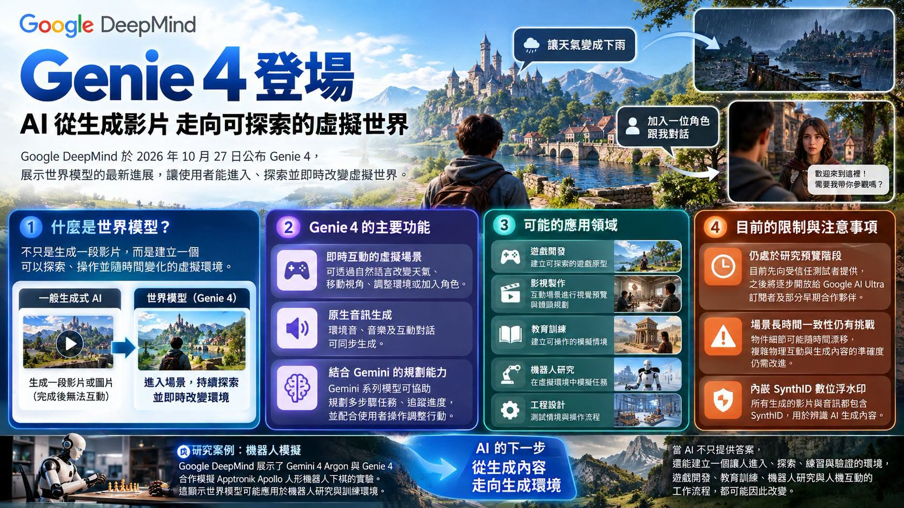

Facebook｜Google DeepMind Genie 4：可即時探索與改寫的世界模型，官方研究預覽已發布
一句話摘要
Genie 4 不是只輸出一段完成影片，而是讓使用者在生成的世界中移動、以文字即時改變事件，並同步生成畫面、環境音、音樂與互動對話。Google DeepMind 將其定位為仍在演進的研究預覽，而不是已普遍可用的消費型產品。
Facebook 貼文說了什麼
AI Daily 在「GenAI & Agentic AI 論壇」分享，將 Genie 4 描述為可「走進去」探索的世界模型：使用者前進時前方畫面會生成，也可用一句話改變下雨、鏡頭或人物。貼文提及原生多模態、即時聲音與對話、研究預覽、Google AI Ultra 未來存取，以及和其他世界模型產品的比較。
本文已將可由 Google DeepMind 官方頁面確認的事實與社群貼文的延伸說法分開處理。
官方已確認的重點
Google DeepMind 在 2026-10-27 發表 Genie 4，官方頁面與公告確認：
- Genie 4 是可即時互動的世界模型，使用者可用自然語言建立或改變景觀、事件、鏡頭、人物與天氣。
- 模型原生多模態：世界可同時產生音樂、環境聲和互動對話。
- 官方說明它建立在 Gemini 家族能力之上：Gemini Omni 協助錨定真實世界外觀與行為，其他 Gemini 模型協助維持模擬的一致性與連續性。
- 可模擬物體碰撞、水流、風中樹木與生成角色的移動／反應；官方將其列為即時互動模擬的能力方向。
- 現階段是提供受信任測試者的研究預覽。官方表示未來將從 Google AI Ultra 訂閱者的 Project Genie，以及 Gemini API／Google AI Studio 的早期存取合作夥伴開始擴展，並提供候補登記。
- Google 表示視覺與音訊內容包含 SynthID 數位浮水印，以協助辨識 AI 生成內容。
對教學、創作與原型的意義
世界模型的價值不只在於「生成得像」，而在於它可讓使用者在一個持續演化的空間中探索假設。例如：
- 教學：用可控制變因的場景，讓學習者觀察天氣、交通、歷史空間或科學現象的變化。
- 遊戲與敘事：先快速測試玩家視角、地圖節奏、事件觸發和角色互動，再投入正式製作。
- 影視預視：用互動方式探索鏡位、走位、場景氛圍與聲音概念，但不應直接把預覽當作成品或權利清楚的素材庫。
- 工程與機器人研究：可作為模擬假設的研究介面；任何真實設備控制、訓練結論或安全判定仍必須在可驗證的測試流程中完成。
必須保留的限制
Google DeepMind 也明示，Genie 4 的環境目前只能在短時段內維持較佳的一致性。模擬時間拉長、進行多次複雜提示修改或在場景中持續移動時，視覺細節與物件恆常性可能漂移。複雜物理互動、即時音訊準確度、可讀文字、空間準確度與長期一致性仍是進行中的研究問題。
因此，教學或創作測試應把它視為探索與原型工具：保留提示詞、版本、截圖與人工審核紀錄；對生成世界中的文字、事實、物理結果與聲音來源另行驗證。
社群貼文中尚未據官方公告確認的部分
Facebook 貼文把 Genie 4 明確歸因於「Gemini 3.8 Flash」，並提及「Gemini 4 Argon」與 Apptronik Apollo 下西洋棋實驗，也比較 Runway GWM Worlds 2、Odyssey-3、免費試用、規格與前代／本代的特定連貫時間。此次查核的 Genie 4 官方頁面沒有提供足以逐項證實這些特定說法的資料。
這不代表相關敘述必然錯誤；但在原始實驗公告、產品頁或定價／存取條款可直接對照前，較妥當的表述是：它們屬於社群貼文的補充或比較觀察，而非本條目採納的官方產品規格。
2026-10-29 補充：從「生成內容」走向可探索的互動環境
沈重宗的 Facebook 貼文以教育與實作語言說明 Genie 4：一般影片生成工具主要輸出預先完成的片段；世界模型的目標則是維持可被探索、操作和持續改變的模擬環境。文章將其延伸到遊戲原型、影視預視、教育訓練、工程設計與機器人研究，並明確提醒虛擬環境表現不等於真實機器人已具備同樣能力。

這是對既有官方查核的實用詮釋，而非新的第一方發布。貼文中「Gemini 4 Argon 與 Apptronik Apollo 下棋」等特定實驗描述，仍未在本條目已檢核的 Genie 4 官方公告中找到可逐項對應的證據，因此不列為已確認規格。用於教學或原型時，較可靠的做法是將生成世界當成探索與假設驗證介面，保留版本與提示詞，並以真實測試、專業審查及安全流程驗證後續結論。
來源封存：`source-archive/2026-10-29-facebook-jack-shen-google-genie4-followup.json`
原始與官方連結
- Facebook 分享網址：
https://www.facebook.com/share/p/1CCe3TjDnJ/
- Facebook canonical URL：
https://www.facebook.com/groups/aigctw/posts/3443093052541249/
- Google DeepMind Genie 4 模型頁：
https://deepmind.google/models/genie/
- Google DeepMind 官方公告，2026-10-27：
https://deepmind.google/blog/genie-4-a-new-generation-of-world-simulation/
- Facebook 沈重宗貼文（2026-10-29 補充）：